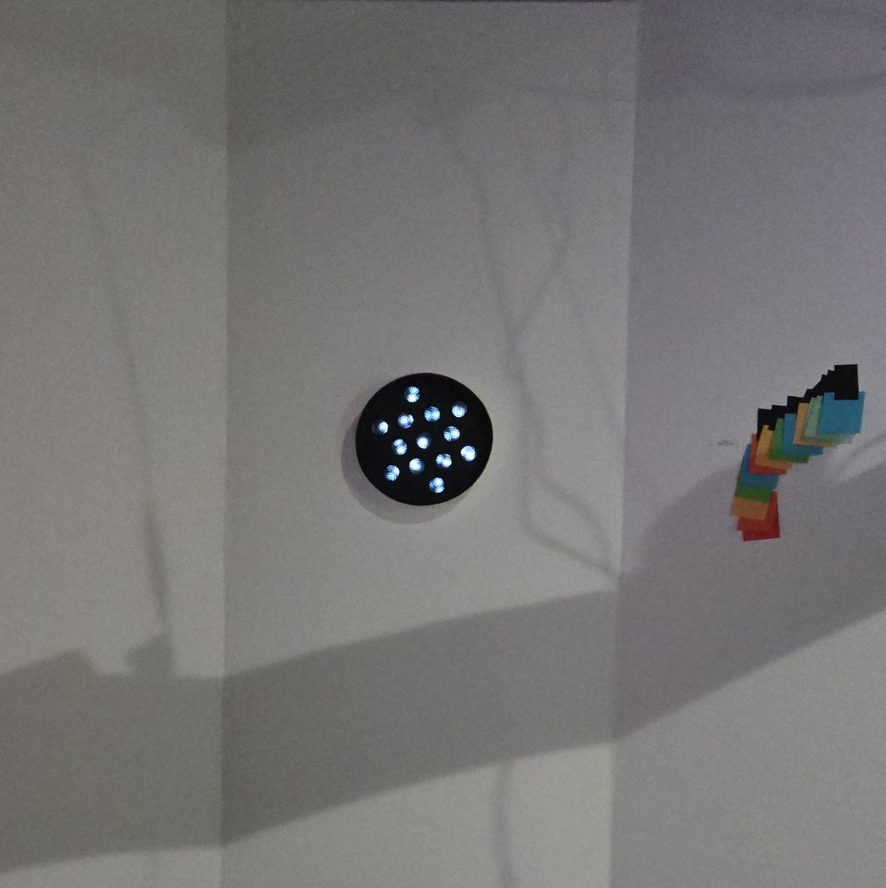
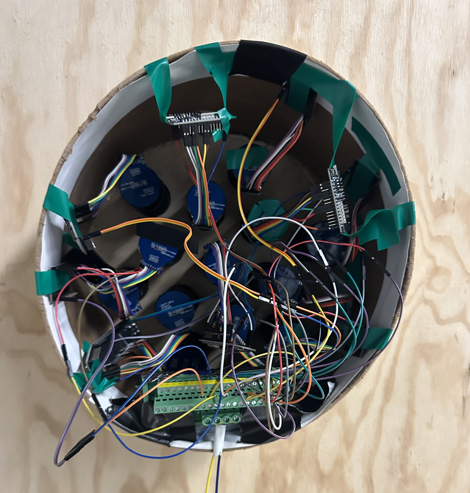
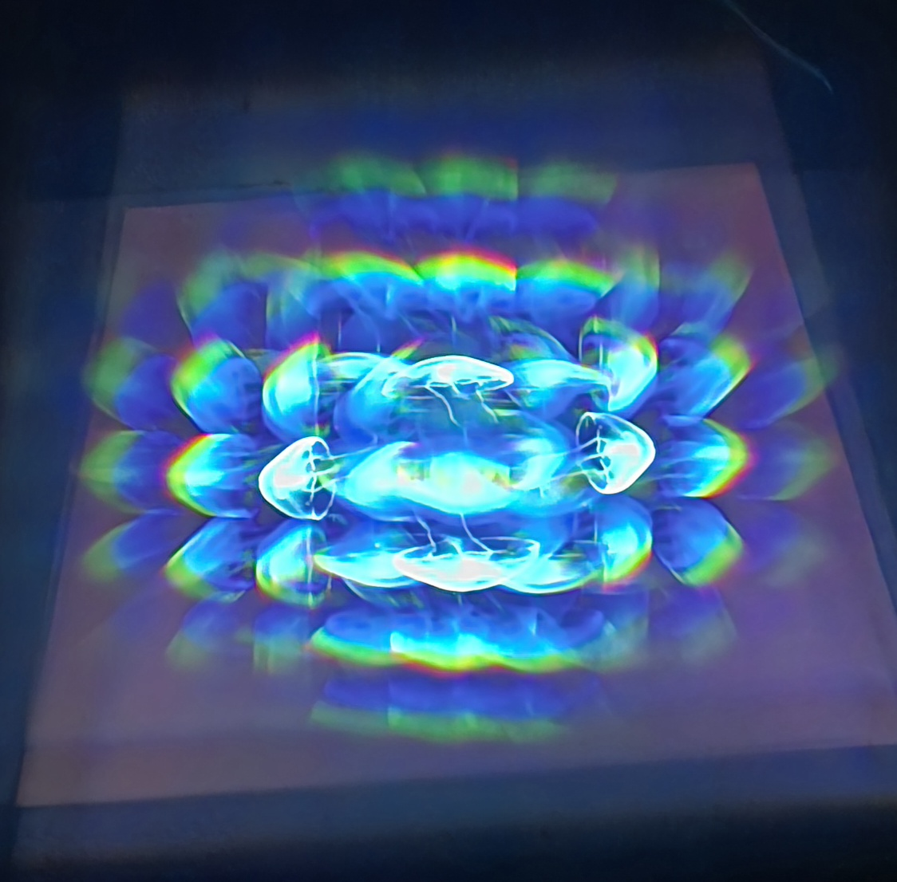
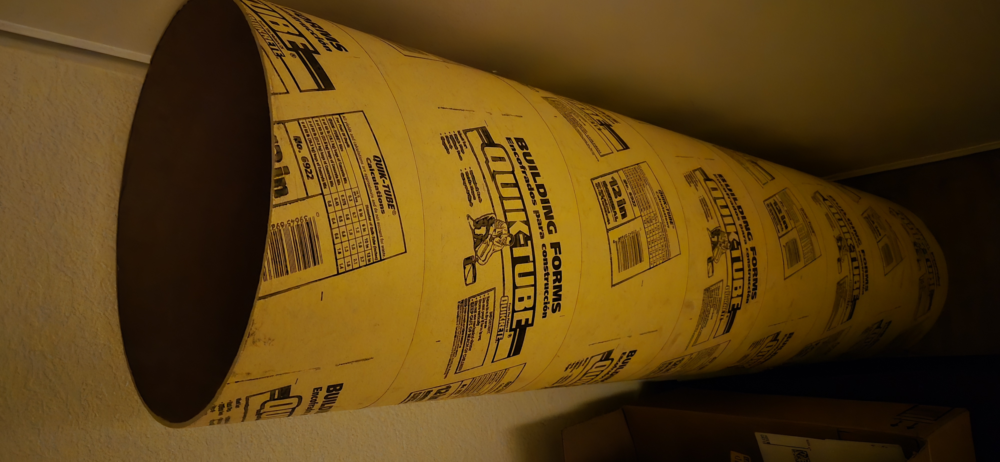

TUBULAR
words
more words


words
more words

I made TUBULAR because...
Talk about the tubes
Talk about the code
description of work
The installation encourages close looking and creates a series of private viewing experiences within a shared exhibition space.


The process began with experiments using prisms, fog, and projected light, but those materials were difficult to control reliably. The project shifted toward diffraction gratings, which produced stronger and more consistent optical effects.
The technical process is central to the concept. The screens do not simply display images; their light is physically altered before it reaches the viewer. The work was developed through repeated testing of tube depth, display placement, diffraction material, screen animations, and the overall arrangement of the viewing portals.



Timeline
Started early experiments.
Shifted toward diffraction gratings.
Began Arduino and screen testing. Acquired structural materials and tested layout.<
Redefined Project.
Solidified Design of The Tube.
Designed structure of tube and made adjustments.
Printed 26 individual tube components, ordered materials, figured out power situation.
Assembled all components.
Installed and documented the work.